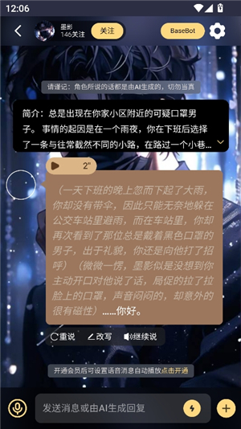

LunaTalk 用了半年的老用户报告——越用越顺手的那些按钮，和越用越烦的那些瞬间
装 LunaTalk 到现在快半年了，从当初为了玩互动剧情随手装上，到现在每天都开着。说说那些当初没注意、时间一长才显出好或不好的地方。
当初为什么装它
说起来很简单——朋友圈看到有人分享一张模拟系统角色卡的截图，有血条、有选项、有 HTML 界面，当时觉得"AI 聊天还能这么玩"，就去LunaTalk官网搜了一个下来。那会儿完全没想到会留到现在，更没想到后来会自己动手写角色卡发广场。
变化三连：越用越顺手、越用越烦、离不开的和碰都没碰的
越用越顺手的——工具栏那堆按钮，组合起来比单独好用十倍
刚装的时候工具栏里的重说、改写、继续这三个按钮我基本只用重说一个。AI 回复跑题了？重来。写得太差？重来。就这么简单粗暴。
用了三个月之后才发现，这三个按钮是一套组合拳，不是各自为战的。比如 AI 在某个关键剧情节点人设崩了——先说"等等，你是那个精灵游吟诗人，说话要简洁"，如果它救回来了那就直接聊；如果救不回来，就长按崩之前那条消息回溯，回到那个节点重新走。回溯比单纯的删除好用太多，LunaTalk文档里对回溯和删除的差异有详细对比，因为它留了锚点，不至于把整个对话清空重来。
还有改写这个按钮，当初我以为就是让你改 AI 打错的字。现在我经常用它"修"剧情——比如 AI 让角色说了一句不符合人设的话，我不改人设，直接把那句台词改成符合的，然后 AI 后面就会顺着这个修正继续。相当于用最少的成本把剧情拉回正轨。
越用越烦的——角色崩塌的频率还是没降，积分消耗的体感也在变
说实话，用了这么久，AI 角色突然不像自己了这件事还是会发生。最烦的是那种慢慢崩的——不是一下就说"我是小明"，而是聊着聊着口头禅没了、称呼变了、突然提到一个之前没提过的地点。等你发现的时候，可能已经崩了好几轮了。
我试过后台开着每 10 轮检查一次的习惯，但说实话没坚持下来。后来用了 Remember 钉住开场白，情况好了一些，但也不是万能的——开场白钉住了，中间的对话上下文还是可能被挤出去。
积分的事也有点微妙。刚装的时候觉得充积分挺便宜，用着用着发现消耗速度比想象中快。尤其是玩长篇剧情的时候，一轮下来跑几十条消息，积分哗哗掉。会员送的 6 万积分看着多，真玩起来也就撑不到两个月。无限卡我只在周末狂欢的时候买过一次，60 积分以下免费确实爽，但 MAX 倍数还是要额外扣，关键剧情节点不用 MAX 又怕 AI 读不全历史。
离不开的和碰都没碰的
离不开的两个功能：
第一个是永久记忆。AI 自动摘要历史对话这件事，听起来好像不如 Remember 精确，但真的分时段聊天的时候太有用了——今天聊了半小时，明天再开，AI 不会像失忆一样重新问"你是谁"。我记得刚开始用的时候没开永久记忆，每次隔天聊都得重新交代一遍背景，烦得要死。
第二个是 Voice 自动播放。当初从官方下载装的时候，Voice 功能是我最不看好的——AI 能说什么好听的？结果用了一次就收不回来了。尤其是那些高冷角色，用中性偏冷的语音读台词，比自己盯着屏幕看有感觉多了。现在只要聊的角色有 Voice 支持，我默认开自动朗读。
碰都没碰的：
背景图更换。会员给了这个功能，但我到现在一次也没换过。默认背景挺干净的，换了反而觉得视觉干扰。可能对爱折腾的用户来说挺有意思，但对我这种"开了就聊、聊完就关"的来说完全无感。
还有会员给的那个自动语音和背景图打包的功能，我也是用到了自动语音但完全没碰背景。
观感修正：当初的几个判断，时间一长变了
说两个反直觉的。
当初以为会员是智商税，现在觉得长期聊天的人离不开。
刚装的时候看会员定价，觉得"不就是个聊天吗，凭什么收月费"。后来算一笔账：会员一次性送 6 万积分 + 3 个功能（我用的上的是永久记忆和自动语音），相当于花充积分的钱白拿两个功能。而且会员到期了也不影响继续聊天，只是那四个功能用不了，积分余额也不会清零。说白了就是"买积分赠四个功能"，没什么亏的。
当初觉得无限卡划算，后来发现不是。
第一次买无限卡的时候激动得不行——60 积分以下免费啊，那我聊个够！结果真用起来发现，我一天也就聊十几轮，60 积分的免费额度根本用不满。反而会员送的积分是实实在在能用上的，无限卡只在周末或者放假的时候有用。日常用的话，会员比无限卡划算得多。

去留结论：短期不会卸载，但有几个信号会让我换
目前没有卸载的打算。原因很简单：我还在写角色卡发广场，还有几个自己造的角色在持续迭代，广场上也有几个老角色我时不时回去聊两句。这些积累下来的东西不是换个 App 就能带走的。
但有几个信号出现的时候，我会认真考虑换地方：
第一，积分或者会员费用突然暴涨。现在的定价我觉得还算合理，但真要是涨得离谱，那我可能会回归纯免费的 AI 聊天。
第二，模型选择被砍。现在能选 GPT 系列、Claude 系列、DeepSeek、Gemini 好几家的模型，不同角色卡适合不同模型。如果哪天 LunaTalk 只让用自家模型，那我留不住。
第三，角色卡生态死掉。广场上没人发新角色卡了，我的角色卡也没人玩了，那这个 App 对我来说就只剩一个空壳。
写角色卡这件事，当初是意外，现在成了习惯
最后提一句。当初装 LunaTalk 真的只是为了玩别人做的角色卡。后来试着自己写了一张发广场，没想到有人用还留了评论，就又写了第二张第三张。现在我已经习惯了每隔一两周就掏出新写的角色卡去广场发，每次发布前都跑 GPT 和 Claude 各测 10 轮，确保人设能稳得住。
从玩家变成创作者，这是我用 LunaTalk 最大的意外收获。它不是最好的 AI 聊天 App，但它让我从"用"变成了"造"。这一点，其他几个我试过的同类产品没做到。
整理好的资料分三个仓库同步更新：GitHub 主仓库 + Gitee 和 GitCode 的国内镜像，访问哪个顺手就用哪个。